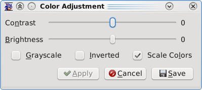

The Color Adjust window allows you to adjust various color settings.
Contrast: Adjusts the contrast of the image.
| Contrast: -50 | Original | Contrast: +50 |
|---|---|---|
Brightness: Adjusts the brightness of the image.
| Brightness: -50 | Original | Brightness: +50 |
|---|---|---|
Grayscale: If enabled, converts the image to shades of gray.
Inverted: If enabled, inverts the colors, resulting in a photo negative.
| Original | Grayscale | Inverted |
|---|---|---|
Color Scaling Method: Determines the color scaling method to be used.
"Raw" color scaling simply shifts each color color component into their correct positions. For instance, an MD color value of 0xEEE would be converted to 0xE0E0E0.
"Full" expands the palette such that maximum brightness on the MD (0xEEE) is converted ot maximum brightness for the current color depth (e.g. 0xFFFFFF for 32-bit).
"Full with S/H" takes the MD's Shadow and Highlight features into account when scaling colors. An MD color value of 0xEEE would be converted to 0xEEEEEE if both shadow and highlight are disabled; 0x777777 if shadow is enabled; and 0xFFFFFF if highlight is enabled. This is probably the most accurate scaling method available in Gens/GS.
NOTE: If any scaling methods (other than "Raw") are enabled, then you must use 32-bit color in order to get accurate screenshots in Gens/GS r7 due to the way the screenshot function is written. This may be fixed in a future version.
|
Raw 0xEEE → 0xE0E0E0 |
Full 0xEEE → 0xFFFFFF |
Full with S/H [normal] 0xEEE → 0xEEEEEE [shadow] 0xEEE → 0x777777 [highlight] 0xEEE → 0xFFFFFF |
|---|---|---|